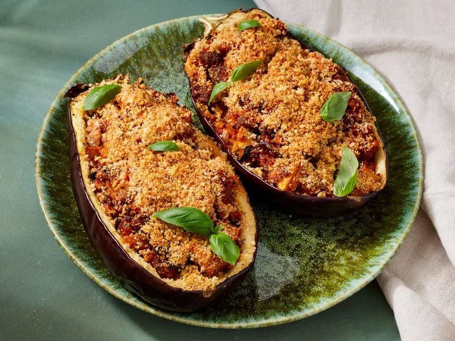

Stuffed Eggplant

This delicious stuffed eggplant with a cheesy top is a must-try recipe! Great as a hearty main but you can buy the mini
eggplants and use them for a side dish or appetizer.
Stuffed Eggplant Ingredients
- Eggplant: You’ll need one eggplant (halved lengthwise) to make two
servings.
- Olive oil: Brush the shells with olive oil before seasoning with salt
and pepper.
- Seasonings: This stuffed eggplant is seasoned with salt, pepper,
fresh garlic, and fresh basil.
- Sausage: Sweet Italian sausage makes this stuffed eggplant a
hearty, crowd-pleasing meal.
- Vegetables: An onion and fresh mushrooms lend texture and flavor.
- Pasta sauce: Use store-bought or homemade tomato-basil pasta
sauce.
- Bread crumbs: Italian-seasoned panko bread crumbs give the
stuffed eggplant a welcome crunch.
- Cheese: For the most delicious results, grate your own Parmesan
cheese instead of using the pre-shredded stuff.
How to Make Stuffed Eggplant
- Scoop out the flesh, brush the shells with oil, and season.
- Chop the reserved eggplant flesh into bite-sized pieces.
- Cook sausage, vegetables, and garlic in the remaining oil.
- Stir in the reserved eggplant, basil, and sauce. Mix in some of the
panko and cheese.
- Stuff the shells and sprinkle the remaining cheese and panko over
the top.
- Bake until the eggplant is tender.